Workshop 2: Automated Data Analysis & Reporting
Introduction
Welcome to another session of your Generative AI Workshop! In this session, you’ll use Data Analysis AI tools to compile a brief report (HTML or PDF) analyzing the relationship between two chosen country indicators from the Gapminder data repository here: https://gapminder.org/data.
Your final report should contain:
- A world map visualization of your first selected indicator (for the chosen recent year).
- A world map visualization of your second selected indicator (for the chosen recent year).
- A scatterplot showing the relationship between your two chosen indicators.
- A description and interpretation of the relationship between the two indicators. This may include a correlation coefficient (e.g., Pearson’s \(r\)) if appropriate, or a qualitative description based on the scatterplot.
- A short reflection written by you about the process of interacting with the AI tools. E.g. What was easy? What was difficult? What was surprising? What did you learn?
Note that rather than grading the technical precision of the report (we understand that you are not all data analysts), we will simply check that you have followed the overall instructions and written an honest reflection.
Tool Tracks
You will choose one of the following tools based on your coding experience:
Students WITHOUT significant coding experience: You will use Julius, a user-friendly AI data analysis tool with a chat interface.
Students WITH significant coding experience in R: You should use Cursor, an AI-powered code editor, with R.
If you finish your assigned tool track early, you are encouraged to try the other one!
Part 1: General Setup & Data Selection (All Students)
- Choose Your Data:
- Go to Gapminder’s data repository: https://gapminder.org/data
- Browse the indicators and select TWO indicators of interest that you think might be related:
- Make sure data is available for the year 2020, as we will be using this year for our analysis. (Official statistics often take a while to be released; 2020 is old enough that accurate data is likely to be available, and recent enough that the data is still relevant.)
- If you have no experience with data analysis, you may want to check with an instructor to make sure the indicators you choose actually make sense to analyze together. You can also fall back on the famous life expectancy vs. GDP per capita relationship.
- For each chosen indicator, download the data as a CSV file.
Part 2: Tool-Specific Instructions
Please follow the instructions for the tool assigned to your group.
Section A: For Students WITHOUT Prior Coding Experience (Using Julius)
You will use Julius, an AI data analysis chat-based tool, to analyze your data and generate content for your report.
Setup Julius:
Go to Julius.ai and sign up. Feel free to skip the initial onboarding flow. You can usually skip it by going to this URL: https://julius.ai/chat
For a 2-week trial of premium features, at the top left of the page, click on the user profile dropdown menu and select “Account Settings”
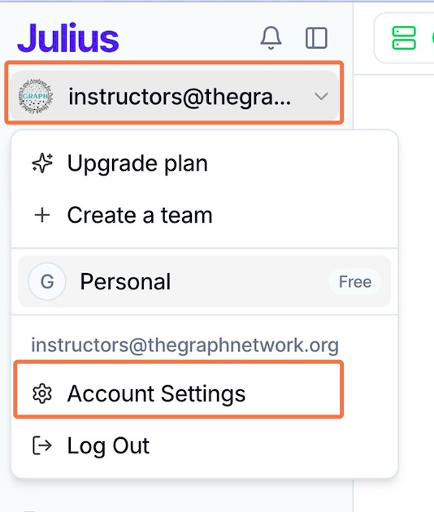
In the settings menu, click on Account, then under Institutional Codes, enter the code that will be provided by your instructor in class.

- Please do not share this code with anyone outside of the class.
Starting Your Analysis in Julius:
- Start a new “thread” in Julius.

Select your tools:
- Code Language: Julius can use Python or R. Please select R since the GRAPH team is more familiar with R as the GRAPH team is more familiar with R, and the instructions below are written for R.
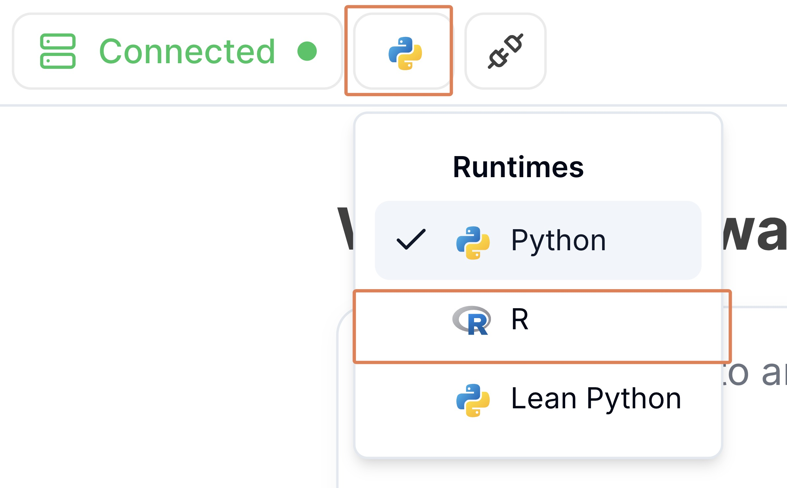
- AI Model: It’s recommended to switch to the Claude 4.5 Sonnet model for potentially better results. The model selection is typically in a dropdown menu below the prompt input box.
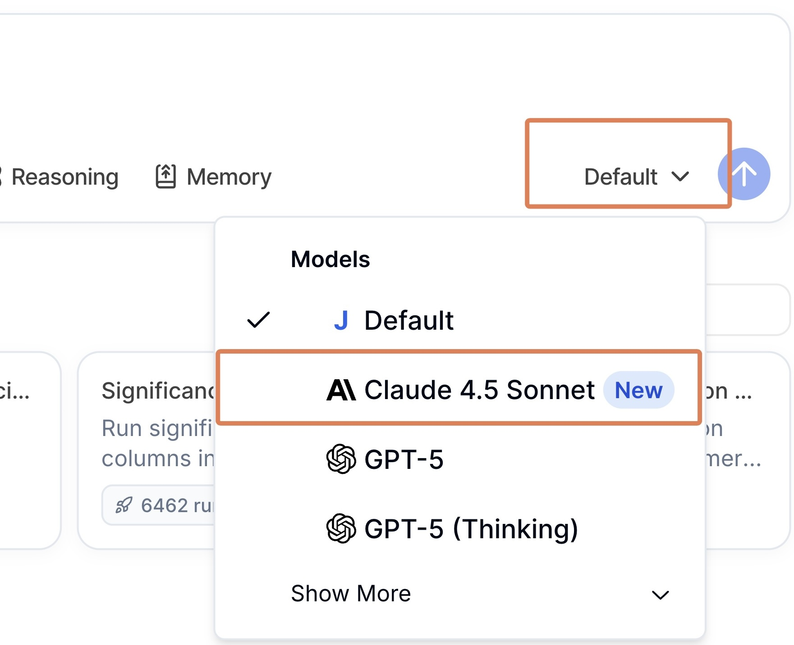
Chatting with Julius (Example Prompt):
First, upload your two CSV files to the conversation. This ensures Julius has access to your data when you give it instructions. You can drag and drop them in, of you can click on the plus button to the bottom left of the chat window and select “Upload file”.
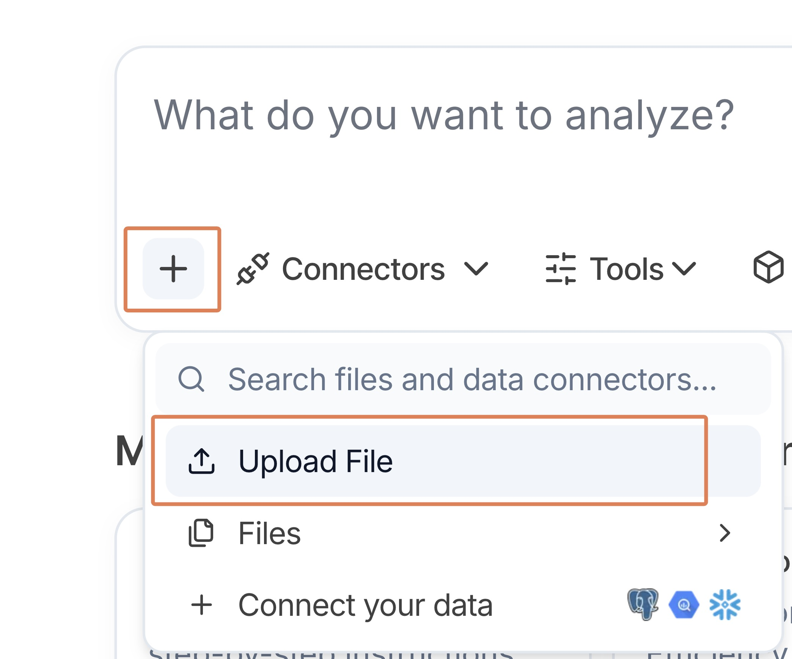
Now we will write a prompt to Julius to help us create a report on the relationship between two indicators. Edit the prompt below to include the names of your two indicators, then send it to Julius.
Chat with Julius Example Prompt:
I am writing a report on the relationship between two indicators 1. [TYPE YOUR INDICATOR 1 NAME HERE] 2. [TYPE YOUR INDICATOR 2 NAME HERE] Both datasets have been added. Run the following steps for the report: 1. For each indicator, briefly view and print the data to understand it first. 2. Then subset the data to 2020. 3. Create a world map for each indicator in 2020. Use ggplot2 and the maps package to create the plot. 4. Create a scatterplot showing the relationship between these two indicators in 2020. 5. Provide a brief interpretation of the relationship between the two indicators.Review and Refine: Julius will show its steps, data, and plots. Work with it to refine the figures and text until you are happy with the output plots. You can ask it to change the title of a plot, or to use a different color scheme, for example.
If the AI seems to be going off track or taking too long, look for a square “stop” button (often near the prompt input box) to interrupt it.
- Creating Your Report Document:
- Download Outputs: Download the individual plots (as images, e.g., PNG) or take screenshots of the plots that Julius generates. You can also copy any key text outputs, such as data summaries or interpretations.
- Create a DOCX/Google Docs file: Open a word processor (like Microsoft Word, Google Docs, or Pages) and create a new document.
- Assemble report:
- Add a title, your name, and the date.
- Insert the plots you downloaded.
- Paste in the relevant text outputs from Julius.
- Organize this content into a clean and readable report.
- Add Your Reflection:
- Before finalizing your report, add your short reflection written by you (not the AI) about the process of interacting with the AI tools. E.g. What was easy? What was difficult? What was surprising? What did you learn?
- Final Output:
- Export as PDF from your word processor. This PDF is your primary submission.
Section B: For Students WITH R Coding Experience (Using Cursor with R)
You will use Cursor to generate an R Markdown report. Cursor is an AI-powered code editor that can help you write code and create reports.
Setup Cursor:
You’ll need to set up Cursor and can use their free 14-day trial.
Note: Users in a few countries appear unable to access Cursor at the moment. You may need to use a VPN if this is the case. Or switch to the Julius track.
Watch our setup video before you begin: AI Automated Data Analysis with R and Cursor (for R users only)
You should make sure you are actually using the paid 7-day trial of Cursor. To do this, check your dashboard here: https://cursor.com/dashboard. And click the button to start the Pro trial if you are not yet on it.
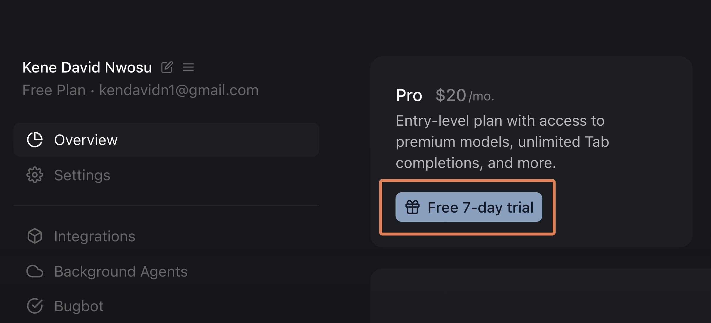
You will need to provide your credit card details to start the trial. But you can immediately cancel it without losing the trial by going to https://cursor.com/dashboard?tab=billing, then clicking “Manage Subscription” at the top right then “Cancel subscription”.
Project folder:
- Create a new project folder on your computer. Place the two CSV files you downloaded from Gapminder into this folder.
Generating Your Report in Cursor:
Open your project folder in Cursor. Create a new R Markdown (
.Rmd) file with an appropriate name.Then use Cursor’s “Agent Mode” to help you write the R code and narrative.
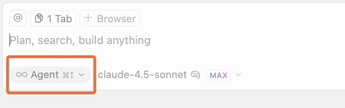
Initial Agent Prompt Idea: Here is an example of an initial agent prompt:
You are an AI agent that creates R data reports. You create reports by writing code to an Rmarkdown file (with github_document output), knitting that file, then reading the output md file to validate your work. You repeat this edit, knit, review loop until the reporting task is achieved. Use plots, tables, and inline R code where appropriate. Be sure to view a sample of each dataset to understand the data before you write code pertaining to it. Code should be hidden from the output. Your task will be further described below.Specific Task Prompting Example:
Now create a data report in my Rmd file using the two datasets I've provided: They are: - [TYPE YOUR INDICATOR 1 NAME HERE] - [TYPE YOUR INDICATOR 2 NAME HERE] The report should: 1. For each indicator, subset the data to 2020. 2. Create a world map visualization for each indicator in 2020. 3. Create a scatterplot showing the relationship between these two indicators in 2020. 4. Provide a brief interpretation of the relationship between the two indicators.Troubleshooting R Package Installations:
- If Cursor has persistent trouble installing R packages, you might need to install them manually. Create a temporary R script (
.R) file in your project. In this script, use theinstall.packages("package_name")command for each required package. Run this script. R might ask you to choose a CRAN mirror (a server to download from); pick any. Once the packages are installed, you can delete the temporary R script.
- If Cursor has persistent trouble installing R packages, you might need to install them manually. Create a temporary R script (
Iterate and Refine: Work with the agent to refine the figures and text until you are happy with the report. You can ask it to change the title of a plot, or to use a different color scheme, for example.
A Note on AI Interaction:
- If the AI seems to be going off track or taking too long, look for a “stop” button (often near the prompt input box) to interrupt it.
- If you don’t like the output, it’s more effective to go back to your previous prompt, edit it to be clearer or more specific, and resubmit, rather than trying to correct the AI with a long series of follow-up messages. Longer conversations can sometimes confuse the AI.
Add Your Reflection: Before your final knit, make sure to add your short reflection written by you (not the AI) about the process of interacting with the AI tools. E.g. What was easy? What was difficult? What was surprising? What did you learn? directly into your R Markdown file. This should be part of the narrative of your report.
Final Output: Your primary submission will be the HTML file generated from knitting your R Markdown file. (That is, while your AI agent will output the report as an .md file while it is working, you should change the output format when you are done and ready to submit. To do this, in your .Rmd file, change
output: github_documenttooutput: html_documentin the header section before your final knit.)
Part 3: Submission
- Upload your final report file (HTML or PDF) to the designated submission link on the course workshop page.
Part 4: Optional - Add to Your GitHub Pages Portfolio
As a final step, you can add your report to your portfolio website which you created earlier in the course.
Upload Your Report to GitHub
To get back to your repository home, visit github.com, click on your profile at the top right, then click on “Repositories”

Locate and click on your repository, which should be called something like
graph-ai-portfolioLocate the button or icon to “Add file”. Click on it and select “Upload file”
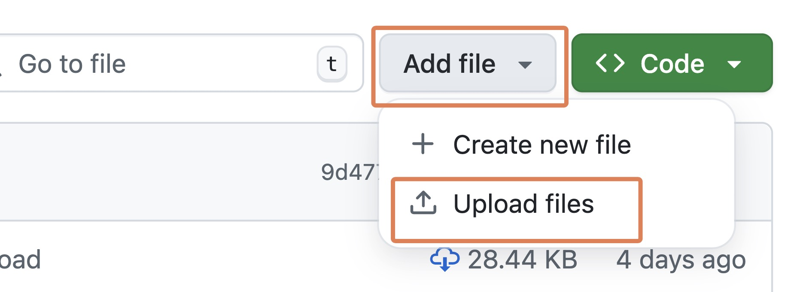
Drag your final report file (HTML or PDF) into the box, then click on “Commit changes”
Get the Direct Link to Your Report
Click on the name of your uploaded report file (HTML or PDF) → right‑click it → Copy link address. Now you have a link to your report file! Paste this into a document you can access later.
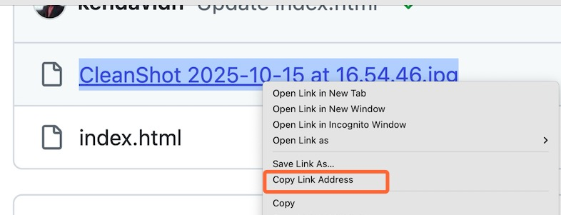
Update Your Portfolio with ChatGPT or Gemini
Open your portfolio repository again, and navigate to your index.html file.
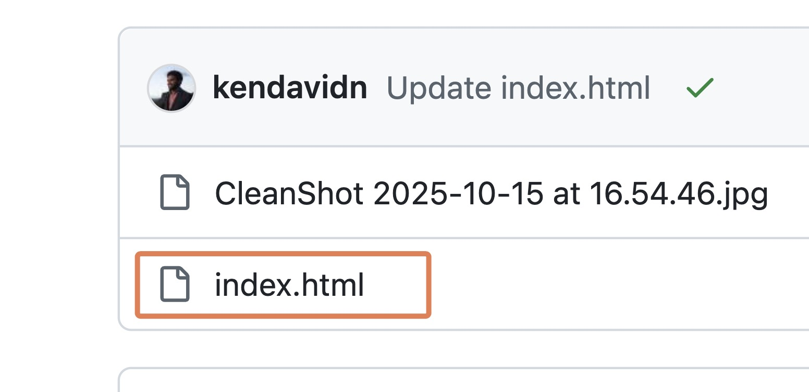
Copy all the code from the index.html file with the copy code button at the top right.

Then, go to ChatGPT or Gemini, paste in your index.html code then ask ChatGPT or Gemini to add a new entry for your new assignment. Your prompt might look something like this:
Please update my portfolio website. I want to add a new project for "Workshop 2: Automated Data Analysis". Include a description of what I did in the assignment. For example, "Analyzed Gapminder data to explore relationships between two global indicators using AI tools." Then, add a link to my report: [NOTE: YOU THE STUDENT MUST PASTE THE DIRECT LINK TO YOUR UPLOADED REPORT FILE HERE]Copy the new HTML that ChatGPT generated → return to your index.html on GitHub → click the edit file (✎) button at the top right.

Delete all the existing code in the file, then paste in the new code from ChatGPT or Gemini.
At the top right, click the Commit changes button.
Go to Actions tab (if you have GitHub Pages set up with Actions).
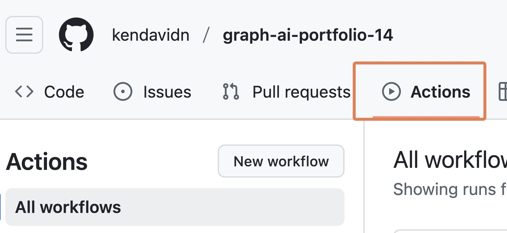
Click on the latest build to observe the build process.
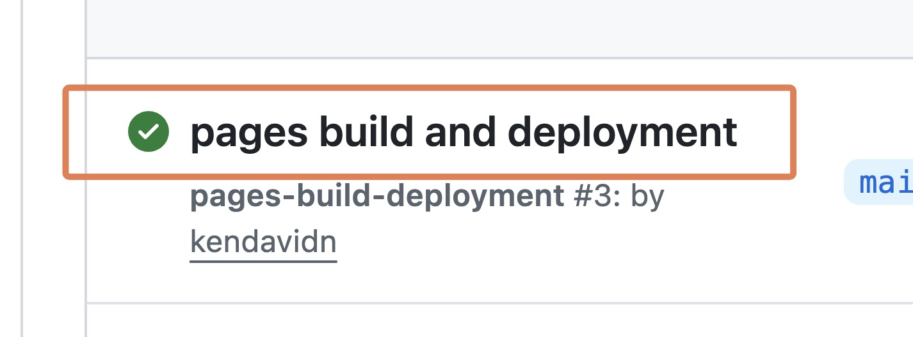
After the build is complete, your live site, if refreshed, should now show the new project entry and the link should work!